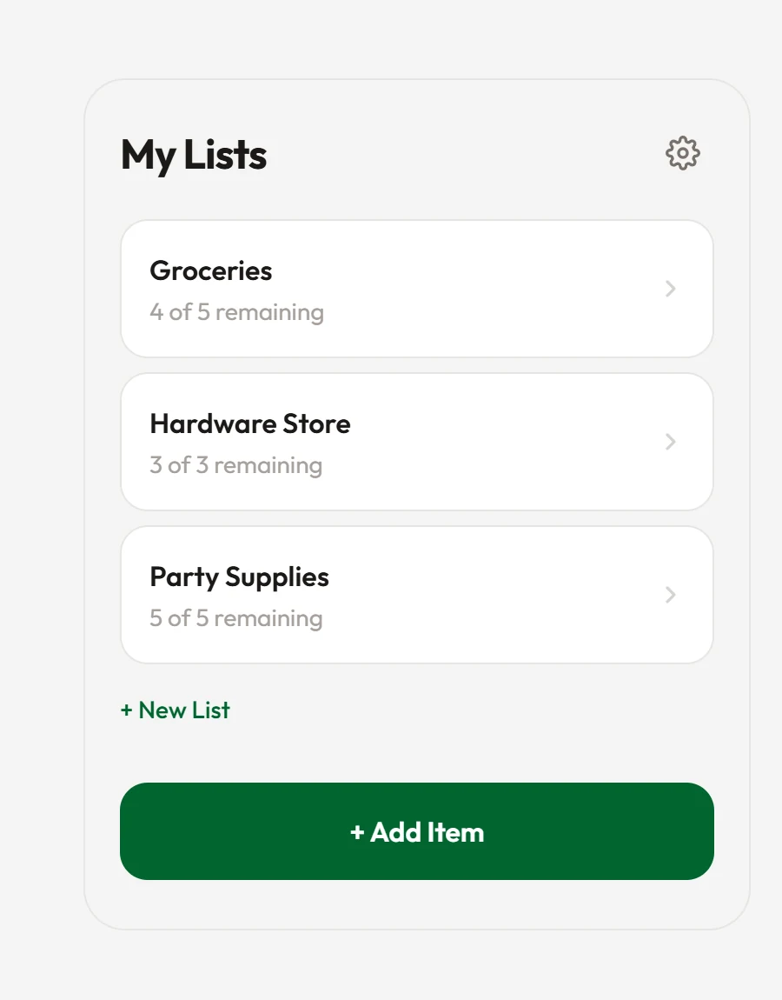
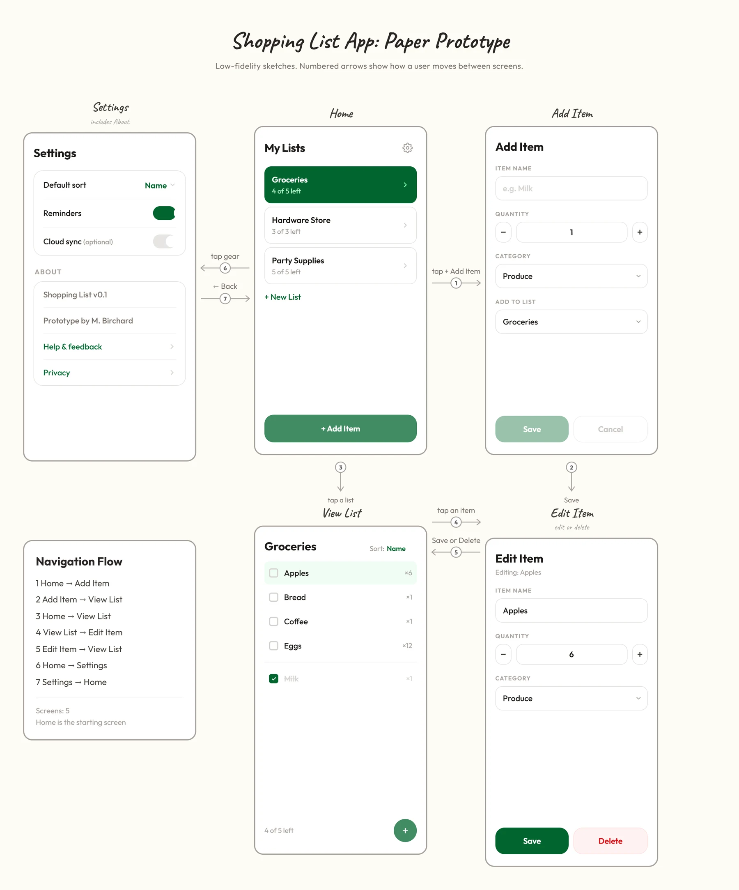
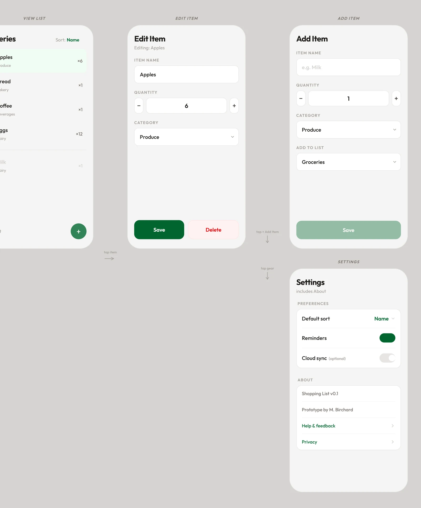

Chapter 06: UI Explorations: Shopping List
A five-screen mobile flow taken from a paper-style prototype, drawn in Figma, to a working, clickable prototype. Every screen, and every path between them, mapped and testable.
- Context
- Coursework, CSU Global
- Tools
- Figma, React
- Screens
- Home, Add, View, Edit, Settings
- Deliverable
- Navigation-mapped prototype
Screen Guide: Paper prototype
Five screens, seven routes

- 1. Home
The only starting point.
- 2. Numbered routes
Seven numbered arrows connect five screens, so a reviewer can walk them step by step.
- 3. Navigation flow
A legend listing every route.
- 4. Checked items
Ticked items sink to the bottom of the list.
Step 1: the paper prototype. Select an entry to find it on the screen.

The brief
Design a paper prototype for a shopping list app covering Home, Add Item, View List, Edit/Delete and Settings/About, with the navigation between them clearly shown.
Navigation first
Before styling anything I mapped every path a user can take. Seven numbered routes connect five screens, and Home is the only starting point. Numbering the arrows turned the sketch into something a reviewer could walk through step by step.
From sketch to something you can click
I rebuilt the sketch in Figma as a working prototype. Lists, items and settings hold real state, so checking off milk updates the "left" count on Home, and a saved item shows up in View List. Below is the full board in its starting state.

Refining the screens
A higher-fidelity pass added item categories under each name, a dedicated Preferences group in Settings, and a softer, rounded device frame.

Design decisions
- Checked items drop below a divider and fade, so what is left to buy is always on top.
- Delete asks for confirmation inline instead of a modal, keeping the user on the same screen.
- Save stays disabled until an item has a name, which prevents empty entries without an error message.
- One accent colour carries every primary action, so the next step is always obvious.